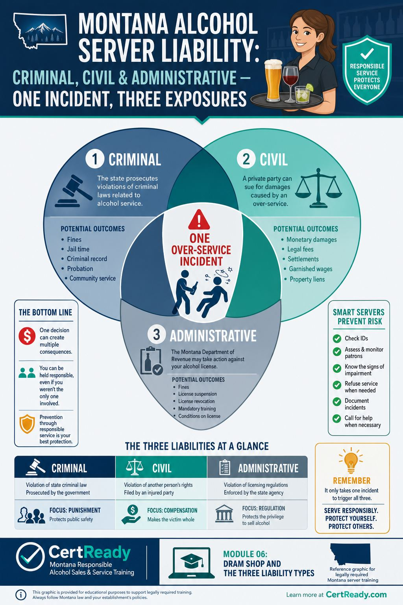
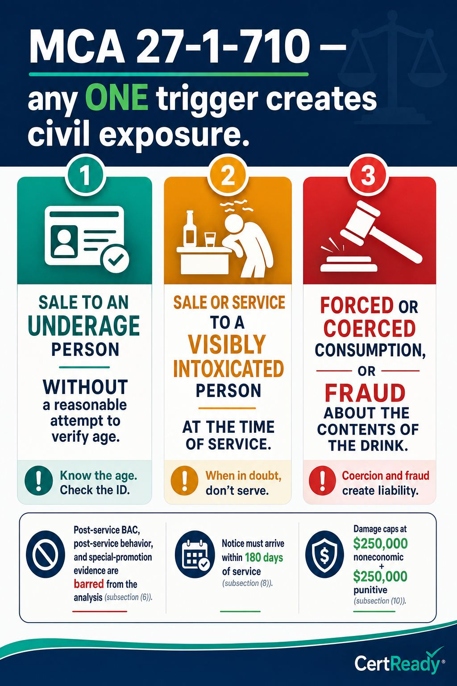

When a server's mistake causes harm in Montana, three different legal systems can each take a swing at the licensee. They are independent, so any combination can happen at once.
Outcomes: K9
On-premises course module
MCA 27-1-710 three-trigger framework, $250K caps, the 180-day notice deadline, and the 2-year statute of limitations
This page mirrors the student lesson content and infographics so Montana CARD can review it without using the CertReady LMS.
When a server's mistake causes harm in Montana, three different legal systems can each take a swing at the licensee. They are independent, so any combination can happen at once.
Outcomes: K9

Outcomes: K9
One incident can trigger all three. A server who knowingly serves a visibly intoxicated customer who then injures someone could face:
A criminal charge against the server personally
A civil dram-shop suit against the licensee
An ARM 42.13.101 license penalty against the bar Each runs on its own track and timeline. The criminal case might wrap in months; the civil suit can take years and seek hundreds of thousands of dollars; the administrative action can come from a single CARD compliance check the same week.
Outcomes: K9
MCA 27-1-710 is the EXCLUSIVE remedy for civil claims arising out of alcohol service in Montana. A plaintiff cannot go around the dram-shop statute by suing under general negligence or some other theory. The statute also limits when liability attaches: only when one of three specific triggers is met.
Outcomes: K10

Outcomes: K10, P7
MCA 27-1-710(2) (paraphrase, not verbatim): A person or entity that furnishes alcoholic beverages may not be found civilly liable under any other statute, theory of recovery, or common-law claim, except as provided in this section (i.e., only when one of the three triggers above applies). Routine service to a customer who later causes injury is NOT, by itself, dram-shop liability.
Outcomes: K10
What 'reasonable effort to verify age' means. Trigger #1 lets the bar off the hook on minor-sale liability if the server made a reasonable check. Reasonable means:
Asked for and inspected an acceptable ID (per ARM 42.13.902)
Confirmed the photo matched
Did the DOB math
Acted on red flags if any showed up If you carded carefully and the customer used a good-quality fake ID that fooled you, MCA 27-1-710(2)(a) protects the bar. The customer using the fake ID carries the criminal liability under MCA 16-6-305. The defense disappears if there's evidence you didn't check at all or ignored an obvious tell.
Outcomes: K10, P7
What 'visibly intoxicated' means in court. Trigger #2 turns on what the server knew or should have known at the moment of service. Plaintiffs argue the customer showed observable cues of impairment: slurring, stumbling, repeating, glassy eyes, mood swings. The bar's defense is the incident log + employee training records:
"Our server was trained on the Montana standard."
"Our incident log shows we cut off two other customers that night."
"We did not observe visible impairment in the named customer." Without records, the bar's defense becomes a he-said-she-said.
Outcomes: K10, P7
Outcomes: K10
Why economic damages aren't capped. A medical bill is a real number, not a discretionary jury award. If a victim has $1.2 million in lifetime medical care from a crash, that figure goes into the verdict regardless of the noneconomic-damages cap. The $250K caps only limit pain-and-suffering and punitive awards. For a serious crash, the economic damages alone can dwarf the caps.
Outcomes: K10
MCA 27-1-710(6): banned evidence. When deciding whether the customer was visibly intoxicated AT THE TIME of service, the jury may not consider:
The customer's later BAC (e.g., the 0.18 reading at the crash scene three hours after they left)
Signs of intoxication that appeared after they left
Post-service conduct (a fight at a different bar, the crash itself)
That the bar was running happy hour
Hypothetical-BAC reconstructions by experts The test is what the server saw and reasonably inferred at the moment of service. This is one of the strongest defenses in Montana
but it only works if the bar has the records to back up what they observed at the time.
Outcomes: K10
Most servers never see a dram-shop case. The ones who do experience it as a slow-motion process that starts months after the incident and stretches over years.
Outcomes: K10
Outcomes: K10
What the bar's defense rests on at trial. Two things, almost always:
The incident log
contemporaneous notes that the bar refused other customers, monitored the room, knew the standard, and didn't see visible impairment in the named customer.
The training records
proof that the server who poured the drinks was certified RASS-trained, knew the cues, and applied them. Without either, the case becomes a credibility contest. With both, the bar is in a much stronger position to defend the claim, sometimes before trial.
Outcomes: K10
The insurance side of a dram-shop claim. Most Montana licensed establishments carry general liability coverage that includes a liquor liability endorsement (sometimes a separate policy). The 180-day notice is the trigger event for the carrier
once the bar receives certified-mail notice, the carrier assigns defense counsel and a claims adjuster within days. The bar's job between notice and trial:
Preserve every piece of evidence from the date of service: receipts, time-stamped surveillance, the incident log, the server's training certificate, and any text messages or emails about the customer that night.
Avoid contact with the injured party or their family. Any communication runs through defense counsel.
Don't issue refunds, apologies, or sympathetic statements that plaintiff's counsel can read aloud at trial as an admission. "We're so sorry, we should've cut him off" is the worst thing a manager can say after a crash.
Cooperate fully with defense counsel: depositions, document production, sworn statements. Stalling or sandbagging is the fastest way to lose insurance coverage. The carrier's incentive is settlement within the $250K noneconomic + $250K punitive cap unless economic damages (medical, lost wages) push the case much higher. A well-documented bar with strong training records can sometimes resolve a dram-shop case for a fraction of the cap. A poorly documented bar with sloppy serving practices will often settle near the cap on the carrier's recommendation.
Outcomes: K10, P7
Dram-shop timeline at a glance. From sale to verdict, a typical Montana dram-shop case follows this rough timeline:
Day 0: Sale or service to a customer who later causes injury. (The clock for both the 180-day notice deadline and the 2-year statute of limitations starts here under MCA 27-1-710(8).)
Days 1-30: Police investigate. If alcohol involvement is suspected, plaintiff's counsel may already be reviewing crash reports and identifying the bar.
Days 30-180: Plaintiff sends certified-mail statutory notice naming the bar. Notice must arrive by day 180 or the dram-shop claim is forfeited.
**Day 181
Month 24:** Discovery phase. Defense counsel reviews the bar's incident log, training records, surveillance, and receipts. Depositions of the server, manager, and witnesses. Settlement discussions.
By Month 24: Civil action must commence. Either settle or file suit by the 2-year mark from sale/service.
After filing: Trial typically 6-18 months later. Judgment (or settlement). Damages capped at $250K noneconomic + $250K punitive per event under MCA 27-1-710(10); economic damages uncapped. The earlier the bar's defense team has access to good documentation, the better the outcome. Train every server to write a brief incident-log entry for any near-cutoff or refusal, even when nothing dramatic happens. The boring entries are what save the bar in court
they show the standard was applied consistently, not selectively, the night of the incident. A bar with 200 routine log entries and zero gaps tells a different story than a bar with one panicked entry written the day plaintiff's counsel sent notice.
Outcomes: K10, P7
Does Montana's dram-shop framework let the family win?
Scenario 1: The customer who didn't appear intoxicated. A 23-year-old came into your bar at 8 PM, ordered three beers over two hours, didn't slur, didn't stumble, paid, and left at 10 PM. At 11 PM he caused a fatal crash a few miles away. His BAC at the scene was 0.18, and the family is suing the bar.
Outcomes: P7, K10
Which trigger applies, and what's the bar's exposure?
Scenario 2: The customer who clearly was intoxicated. A 240 lb regular drank seven 16 oz craft IPAs over three hours. By the seventh he was slurring, swaying when standing, and getting argumentative. The server poured the seventh anyway. At midnight he T-boned another car at an intersection, severely injuring the other driver.
Outcomes: K10, P7
Outcomes: P7
The hardest case for plaintiff's counsel is a bar that can produce: a refusal log showing the bar cut off three other customers that night, a training record showing the server poured was certified six months ago, and surveillance video showing the customer in question did not slur or sway at the bar. That combination can make a dram-shop claim much harder to prove.
Outcomes: P7
The 180-day notice window under MCA 27-1-710(8) - what the bar will actually see. A dram-shop case in Montana starts with a certified-mail notice to the licensee. The notice must arrive within 180 days of the sale or service alleged to have caused the injury. The notice typically lists the date of service, the licensee's name, a brief factual description, and the law firm representing the injured party. From the bar's perspective, the 180-day window is the practical hinge: if surveillance video is on a 90-day overwrite cycle (standard for most retail systems), the footage may already be gone by the time the notice lands. The incident log, the training records, the receipts showing the customer's tab, and the staff-list-for-that-shift are the artifacts most likely to survive the gap. The single best preservation move a bar can make is to keep video archived for at least 200 days for any night where any incident report was filed, and to keep incident logs for the full 5-year statute window. The cost of additional video storage is trivial compared to the cost of going into a dram-shop case with no footage of the customer at the bar.
Outcomes: P7
The MCA 27-1-710(10) damage caps are not unlimited protection. Montana caps noneconomic damages at $250,000 per event and punitive damages at $250,000 - meaning a single dram-shop case carries an exposure ceiling on the soft-money portions of the judgment. What's NOT capped: economic damages. Lost wages, medical bills, life-care planning costs, and earning-capacity claims have no statutory cap. In a case involving a young adult plaintiff with a multi-decade earning horizon, the uncapped economic-damages line can run into seven figures all by itself. The cap is a real benefit but it is not a magic shield; insurance carriers and risk managers price licensee policies on the uncapped economic-damages exposure, which is why a bar with multiple dram-shop notices in its history can see premium increases that exceed the entire ARM 42.13.101 fine schedule by an order of magnitude.
Outcomes: P7
The 2-year statute of limitations under MCA 27-1-710(8) - what it means in practice. Once the 180-day notice window has run, the plaintiff has the rest of the 2-year statute from the date of sale or service to actually file the civil complaint. That 2-year window is the planning horizon for any licensee defense: in practice, dram-shop suits in Montana are most often filed in the 12-to-18-month range after the underlying event. From the bar's side, this means a dram-shop file that opened in May 2026 may sit quietly until late 2027 before discovery requests start arriving. The risk-management implication is that record retention isn't optional, and it isn't a 'one and done' exercise. A bar that purges incident logs annually has stripped its own defense before the suit is even filed. Retention practices anchored to the 5-year record-retention floor under CertReady policy and Montana DOR audit practice are the floor; many licensee insurers require retention of all incident records, training certificates, and video archives for the full 5-year window as a condition of coverage at preferential rates. Managers should map the 5-year obligation to their retention systems explicitly: cloud video archive for surveillance, secured paper or digital binder for incident logs, and a separate training-certification log keyed to each individual server's RASS card number and date of completion.
Outcomes: P7
Passing score: 80%
Which is NOT one of the three liability types covered in Montana RASS?
Correct answer: d. Tax
Outcomes: K9
Which of the following is NOT one of the three Montana dram-shop triggers?
Correct answer: c. The customer drove home after drinking
Outcomes: K10, P7
Under Montana's dram-shop statute (MCA 27-1-710), which kind of damages is subject to a statutory cap and which is not?
Correct answer: a. Noneconomic and punitive damages are capped; economic damages (medical bills, lost wages) are not capped
Outcomes: K10
In a Montana dram-shop case, the jury can use a customer's post-service BAC to prove they were visibly intoxicated at the bar.
Correct answer: false. False
Outcomes: K10
A dram-shop plaintiff must serve certified-mail notice on the licensee within a limited window of the sale or service. Why does this rule make a contemporaneous incident log so valuable to the licensee?
Correct answer: b. Notice can arrive months after the incident, so a log written that night is the licensee's strongest evidence of what the server actually observed
Outcomes: K10
Which of the following is the strongest piece of evidence in defending a Montana dram-shop case?
Correct answer: b. A contemporaneous incident log + RASS training records for the server who poured
Outcomes: P7
Are economic damages (medical bills, lost wages) capped under MCA 27-1-710?
Correct answer: c. No - economic damages are uncapped
Outcomes: K10
Briefly explain why MCA 27-1-710(2) is described as 'restrictive' compared to other states' dram-shop laws.
Outcomes: K10